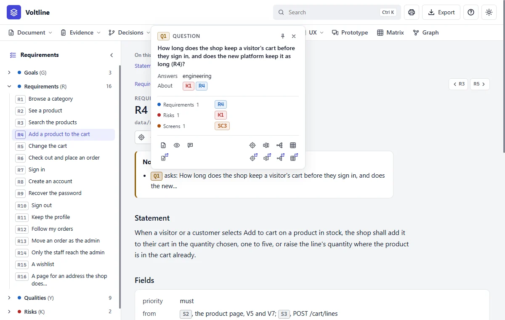
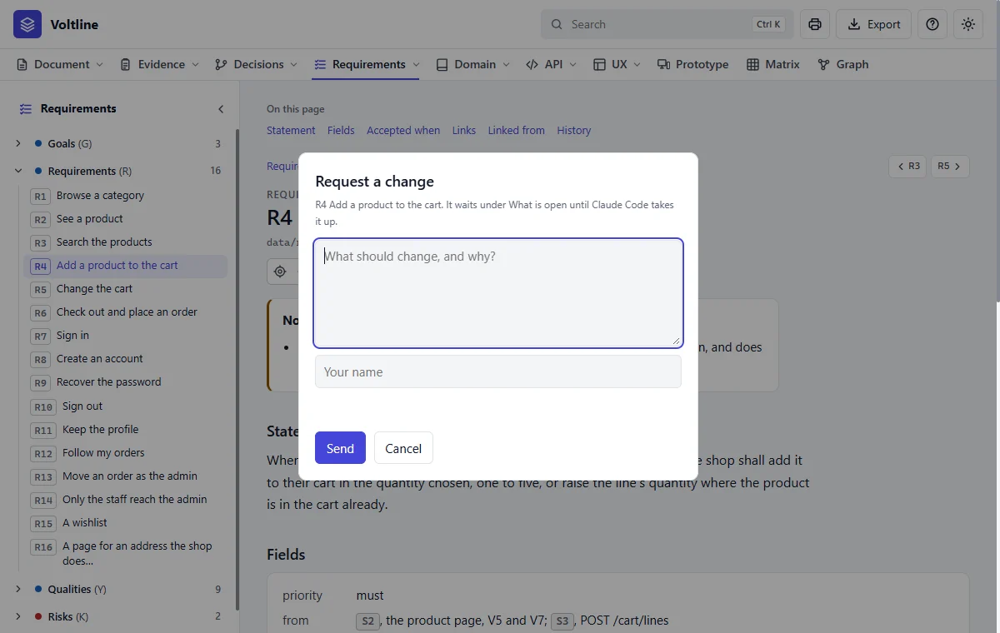
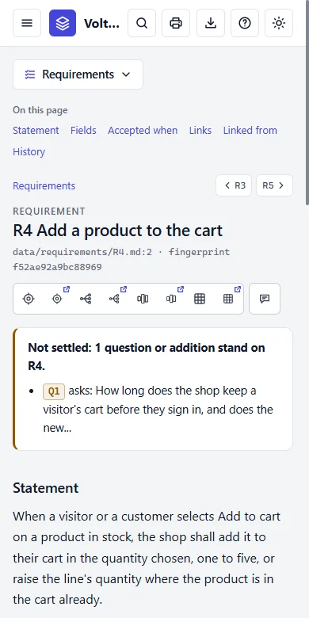

Cards
In everyday termsIndex cards. With hundreds of short names like R4, you'll often wonder what one means. Instead of leaving your page to find out, you can pull up a little card about it.
What it answersWhat is this ID, and how do I get around without losing my place?
ID cards

- 1The ID and its kind.
- 2Pin and close. A pinned card stays open from page to page.
- 3Its links, by kind. Right click one to open its card beside this one.
- 4Open, Preview and Request a change.
- 5Around, Layers, Impact and Matrix.
- 6The same, in another tab. Each has a small arrow.
Cards let you walk from fact to fact without leaving the page you're on. Right click an ID inside a card and another opens beside it. Past six cards, the oldest fold to a strip at the bottom left. Preview shows a node's page in a popup. A card can be dragged by its top. Escape closes the newest, and a click on the page closes all but the pinned.
Finding your way on a page
- The tree on the left holds everything in the part. Drag its edge to widen it, or press « to fold it away.
- On this page, on the right of a long page, jumps to a heading. On a narrow window it sits above the page.
- Previous and next are the small
‹ R3andR5 ›buttons at the top right of a node's page and again at its foot. They follow the order of the tree, and a pause over one shows the name it leads to. - An ID's kind. Pause on any ID, on a page, in a tree, in the Matrix or in the Graph, and a small tip says what it is: Requirement, Flow and so on.
Asking for a change from here

The application reads. It never changes the specification. Your request waits under What is open, in inbox.md, beside the data and never in it, so nothing has changed yet.
In Claude Code, python app/spec.py inbox lists what waits, and Claude takes each one up and closes it. While anything waits, the specification can't be agreed.
On a phone

Read it like this
- On any page, right click the first ID you don't recognise.
- Read the card. If you need more, press Preview, not Open, to keep your place.
- Pin a card you want to keep by you, and go on reading.
Mistakes people make
- Opening everything in new tabs. Cards were made so you don't have to.
- Looking for an Edit button. There isn't one. Ask Claude Code, or use Request a change.